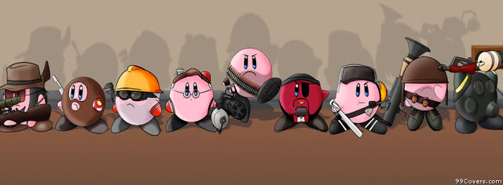

Juegos que fueron clásicos:
Hoy te traemos una lista de los mejores juegos de la década, un top de juegos que tienes que tener en cuenta si estas con mucho tiempo libre y demasiado aburrimiento, empezemos...
- Portal 2 (PlayStation 3 - 2007)
- Pac-Man (1980)
- Silet Hill 2 (PlayStation 2, 2001)
- Silent hill 2 remaster
- Silent hill 2 Hd
- Resident Evil 4
- Read Dead Redemptions
De este ultimo las mejores versiones son: